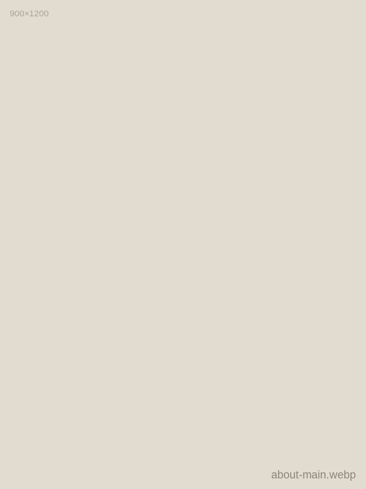
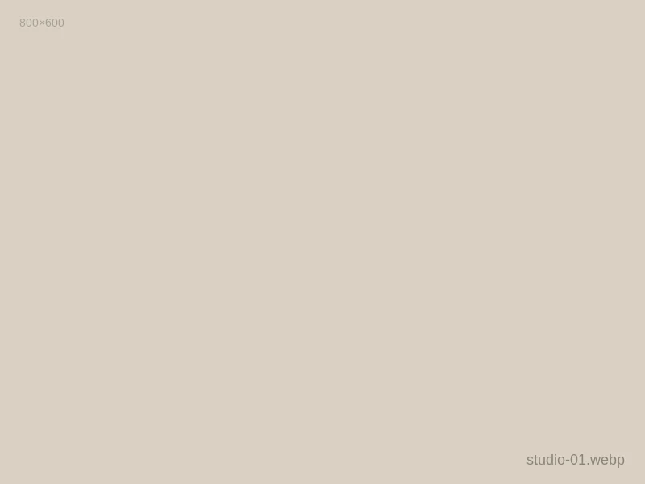
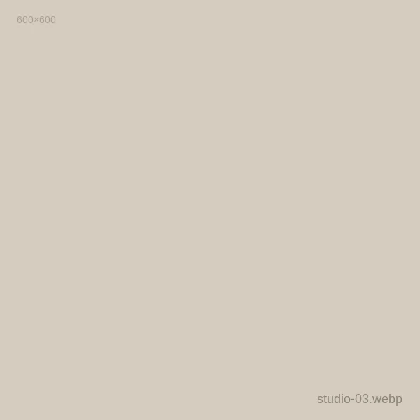
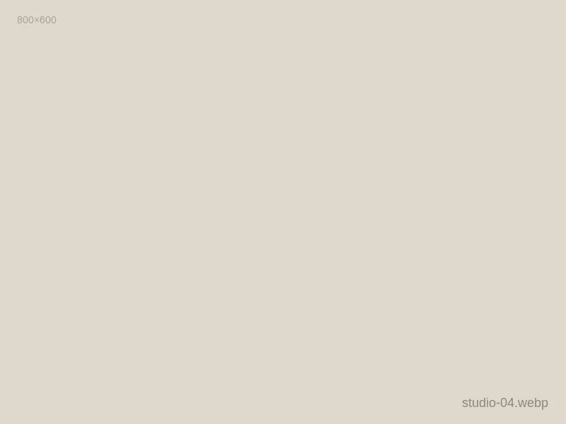
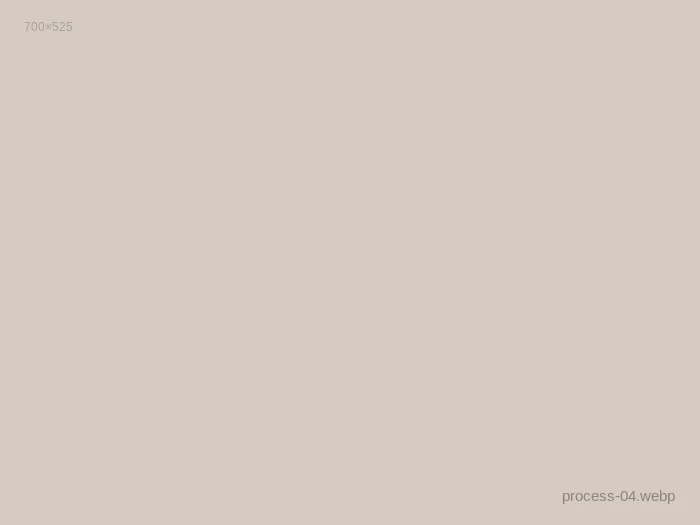

[Elena Rostova · Brooklyn studio sitting in north-facing morning daylight.]
"I photograph to slow down time until it becomes palpable."
[Born in Saint Petersburg and trained in Paris, Elena Rostova has spent the past decade crafting an editorial visual language defined by restrained geometry, soft film halation, and natural light. Her work sits between fine art documentary and luxury commercial commissions.]
[Working primarily with Hasselblad 500C/M and Contax 645 medium format cameras, she approaches every project without forced posing or synthetic strobes. Her archives reflect a devotion to organic textures: coarse linen, wet limestone, patinated bronze, and unadorned skin.]
[Editorial & Commercial Clients]
- [Kinfolk Magazine] 2024–26
- [Vogue Scandinavia] 2025
- [Cereal City Guides] 2024
- [Maison Margiela Fragrance] 2023
- [Arper Furniture Italy] 2023
- [Atelier de Céramique] 2022
[Exhibitions & Awards]
- [Paris Photo Prize: Silver] 2025
- [Solo Show: Galerie Blanc, Marais] 2024
- [International Photography Awards] 2023
- [Arles Open Salon Selection] 2022
Atelier & Darkroom Mosaic
Brooklyn Studio Practice


The Four-Stage Process
A disciplined, collaborative roadmap from discovery to archival delivery.
[Discovery & Concept]
[We establish the emotional core, architectural palette, lighting reference, and narrative storyboard for your project.]
[Art Direction]
[Casting, location scouting, styling coordination, and daylight timing calculations are locked into a production call sheet.]
[The Session]
[Calm, focused on-site execution with both digital and medium format analog cameras to capture honest, unforced moments.]

[Curation & Retouch]
[Deliberate editing, color grading matching our signature film tones, high-resolution delivery, and archivist-grade file masters.]
![[Curved staircase and raking light]](assets/img/footer-01.webp)
![[Monochrome portrait detail in overcoat]](assets/img/footer-02.webp)
![[Hands working terracotta clay on wheel]](assets/img/footer-03.webp)
![[Fog rolling over alpine pine ridges]](assets/img/footer-04.webp)
![[Intimate couple silhouette across Tuscan field]](assets/img/footer-05.webp)
![[Still life ceramic cup on travertine block]](assets/img/footer-06.webp)